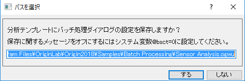
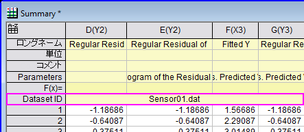
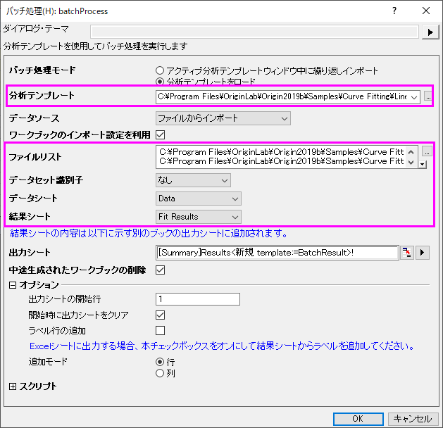
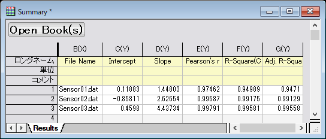

バッチ処理
バッチ処理

バッチ処理ツールで、既存の分析テンプレートを使って、複数データセットについて繰り返し分析を行います。オプションで、分析結果をWordテンプレートに出力します。ディスク内の複数のデータファイルを処理したり、すでにプロジェクト内にあるデータをループする事ができます。
分析テンプレートを作成するには、操作 (例、曲線フィット)を実行し、再計算モードを自動または手動にします。 任意で結果シートを追加することができ、そこに分析操作で得た結果(例、ファイル名。曲線フィットで生成したパラメータテーブルからの値のサブセットなど)をリンクが貼り付けられています。 そして、バッチ処理ツールを使って複数データファイルまたはデータセットから結果シートデータをまとめたサマリーレポートを作成します。
オプションで、Wordテンプレートのブックマークを使って、Word/PDFファイルに解析結果を出力する選択をすることができます。Wordテンプレートのこのブックマークは、 分析テンプレートにブックマークを追加ダイアログを使って、指定した分析テンプレートに追加された場合のみ有効です。追加されたブックマークワークシートは、自動で作成され、分析レポートからセルにリンクした分析結果と、エクスポートされたグラフサイズのブックマークを保存します。
ツールが複数ファイルを処理するのに使われるとき、インポート設定 (例、カスタムASCII 設定、またはインポートウィザードのフィルタ設定)が分析テンプレートの一部として保存されます。 インポート中に抽出された変数は、結果シートにリンク貼り付けでき、そして、この情報はバッチ処理ツールが作成したサマリーレポートに表示されます。
分析テンプレートには以下が含まれます。
- 元データのワークシート
- 分析レポートのワークシート。これらは、分析処理 (非線形フィットなど)で生成されたレポートシートです。
- 分析レポートからセルリンクした分析結果を含む任意の結果ワークシートおよびファイルヘッダから抽出したファイル名またはパラメータなどのインポート変数
- 任意のブックマークワークシートは、Wordテンプレートから分析テンプレートにブックマークを追加する際に、自動で生成されます。ブックマークワークシートには、Wordテンプレートからブックマークを保存するブックマーク列、分析レポートからセルリンクした分析結果を保存するリンク列、Wrod/PDFファイルにエクスポートするグラフサイズを調整するグラフ幅列があります。
バッチ処理ダイアログで全ての設定をすませ、OKをクリックすると、バッチ処理モードと ファイルリストの内容を除くすべての設定が分析テンプレートに保存されます。バッチ処理モードをアクティブ分析テンプレート中に繰り返しインポートに設定するには、初期設定として分析テンプレートをUser Files フォルダに保存します。バッチ処理モードが分析テンプレートのロードに設定されている場合、オリジナルのテンプレートは自動的に更新が行われます。(この際、テンプレートファイルはOriginがインストールされているフォルダやそのサブフォルダに保存してはいけません。)
Note:
- バッチ処理の設定はバッチ処理ダイアログを開いている時だけ、保存することができます。スクリプトからバッチ処理Ｘファンクションを使用している場合、設定は保存されません。
- もしダイアログを設定内容をデフォルトのパス以外に保存したい場合は、システム変数@BST = -1と設定します。バッチ処理ダイアログの設定内容を分析テンプレートに保存のメッセージボックスが開きますので、バッチ処理ダイアログの中のＯＫをクリックして、設定を保存する場所を変更できます。@BTSを設定するにはメニューから環境設定: システム変数 を選択します。
- 
|
 | バッチ処理ほどの柔軟さや強力さはありませんが、このチュートリアルで概説されている手順を使用して、アクティブなブックでインポートおよび分析操作を「複製」できます。
|
バッチ処理のダイアログボックス
開くには、ファイルをクリックし、バッチ処理をクリックします。
| バッチ処理モード
|
バッチ処理を実行する方法を指定します。
- アクティブ分析テンプレートウィンドウ中に繰り返しインポートする
- ワークブックが既に分析テンプレートとしてセットアップされているものとしてアクティブなワークブックウィンドウに繰り返しデータをインポートします。
- 分析テンプレートをロード
- 指定の分析テンプレートワークブック(.OGW)をロードします。
|
| 分析テンプレート
|
バッチ処理モードが分析テンプレートをロードにセットされているときに利用できます。これを使って、バッチ処理の分析テンプレートを指定します。
|
| エクスポート
|
アクティブ/ロード分析テンプレートに、シート名ブックマークがある場合のみ有効です。オプションを使って、どのファイルタイプに分析レポートをエクスポートするのかを指定します。オプションは、次の通りです。
- なし
- ファイルにエクスポートなし
- Word
- Wordファイルにエクスポート
- PDF
- PDFファイルにエクスポート
- Word&PDF
- WordとPDFファイル両方にエクスポート
|
| Wordテンプレート
|
アクティブ/ロード分析テンプレートに、シート名ブックマークがある場合のみ有効です。このオプションを使用してバッチ処理結果のレポートにWordテンプレートを指定します。
|
| エクスポートパス
|
アクティブ/ロード分析テンプレートに、シート名ブックマークがある場合のみ有効です。このオプションを使って、Wordテンプレート内のブックマークを使ったバッチ分析結果を、どこにエクスポートするのかを指定します。WordおよびPDFファイルは、同じ場所にエクスポートされます。
|
マルチページファイル
としてエクスポート
|
このチェックボックスにチェックを付けて全PDFまたはWordファイルを単一ファイルとして統合します。
|
| データソース
|
データソースは以下から利用できます。
- 指定したファイルをインポート
- 指定したファイルからデータをインポートします。分析テンプレートにデータコネクタが含まれている場合、データソースは指定したファイルをインポートする必要があります。
- フォルダから全てのファイルをインポート
- 指定したフォルダからすべてのファイルをインポートします。
- 既存XYデータセットを使用
- 現在のプロジェクトでXY範囲のデータにバッチ処理を実行します。
- 既存XYZデータセットを使用
- 現在のプロジェクトでXYZ範囲のデータにバッチ処理を実行します。
- 既存ワークシートを使用
- 現在のプロジェクトで選択されたワークシートにバッチ処理を実行します。
このオプションは、データを参照しない統計ツールで役立ちます。ワークシートを同じ構造で設定した場合、このオプションを選択すると、ワークシートの内容が分析テンプレートにコピーされ、プロセスが1つずつ取り込まれます。
- 既存範囲を使用
- 現在のプロジェクトで選択された範囲にバッチ処理を実行します。
|
| ワークブックのインポート設定を利用
|
データソースが指定したファイルをインポートの場合のみ利用できます。 最後にインポートした時の設定を使用するかどうかを指定します。
|
| ファイルリスト
|
指定したファイルをインポートが使われるときに利用できます。バッチ処理のデータファイルを選択します。*.dat, *.txt, *.csv, *.xls, *.xlsx, *.xlsm ファイルがサポートされています。
Origin 2018b以降では、ワークブックに行列、分析テンプレートを埋め込み、バッチ分析を行うことができます。行列はデータや画像ファイルを保存することができます。データモードでは、データファイル(.dat, .txtなど)を行列にインポートして表示、画像モードでは画像ファイル(.jpg, .tifなど)を表示することができます。バッチ処理モードでも行列にファイルをインポートできます。
|
| フォルダ
|
データソースがフォルダから全てのファイルをインポートの場合に利用できます。インポートされるファイルのフォルダを指定します。
|
| ファイル拡張子
|
データソースがフォルダから全てのファイルをインポートの場合に利用できます。インポートされるファイルの拡張子を指定します。複数の拡張子がある場合は、セミコロンをセパレータとして使用できます。
例： *.dat*; *.csv*
|
| 入力
|
データソースが既存のXY(Z)データセットを使用にセットされているときに利用できます。現在のシートや現在のブック、あるいはデータセットブラウザツールで実行した選択など、プロジェクト内のどの場所からでも分析のXY(Z)範囲を指定します。 (データセットブラウザツールを実行するには、入力の右にある矢印をクリックし、列の選択... をクリックします。)
|
| ワークシート
|
データソースが既存のワークシートを使用にセットされているときに利用できます。右向きの矢印をクリックして、ブック中のシート、フォルダ中のシート、フォルダ中のシート(サブフォルダ再帰)またはプロジェクト中のシートでフィルタリングできます。または、ワークシートを選択を選んで、シートブラウザを開きます。リセットは、選択ウィンドウの内容をクリアします。
|
| 固定範囲
|
データソースが既存範囲を使用にセットされているときに利用できます。テンプレートのデータシート内の対応する列にコピーされるだけで、各処理ループでは計算に関与しない固定範囲を指定します。
|
| バッチ範囲
|
データソースが既存範囲を使用にセットされているときに利用できます。バッチ処理中の計算の入力として使用されるバッチ範囲を指定します。
|
| データセット識別子
|
分析するデータセットを識別するため結果ワークシートに"Dataset"というロングネームを持つ列を追加するかどうかを指定します。
- なしの場合、この列は追加されません。
- データソースを指定したファイルをインポートにした場合、オプションは、ファイル名と列ラベル行に表示されているデータシートに関連する情報です。
- データソースをフォルダから全てのファイルをインポートにした場合、オプションは、ファイル名と列ラベル行に表示されているデータシートに関連する情報です。
- データソースを既存XY(Z)データセットを使用にした場合、オプションは、ファイル名と列ラベル行に表示されているデータシートに関連する情報です。
- データソースを既存ワークシートを使用にした場合、オプションは、範囲、ブック名、シート名です。
- データソースを既存範囲を使用にした場合、オプションは、範囲、ブック名、シート名です。
|
| 属性
|
この設定項目は、データセット識別子を分析テンプレートに表示された列ラベル行にセットしたときに追加されます（モード=繰り返しインポート、データソース=指定したファイルをインポートもしくはフォルダから全てのファイルをインポートの時は使用できません）。
データセット識別子にする列を指定するために使用します。デフォルトの<自動>は、現在の設定を使用します。
|
| データシート
|
データがインポートされる分析テンプレートの元データシートの名前を指定します。テンプレートに複数データシートがある場合、オプション<自動>が選択すると、グループファイルを対応するデータシートへ、順番にインポートすることが可能です。更に、<カスタム>を選択した場合、デフォルトのオプション<自動>で出てくるデータシートを追加・削除することが可能です。
インポートするファイルを選択するときに（データソースの下）、開くダイアログの下部パネルで名前、サイズ、日付のヘッダをクリックしてファイルをソートできます。
カスタムASCIIインポート設定またはインポートウィザードフィルタなどのインポート設定を分析テンプレートのデータシートに保存することができます。詳細は、ASCII 設定を保存する および フィルタの保存ページ をご覧ください。
|
| 結果シート
|
分析テンプレートで任意の結果ワークシートを指定します。これはツールで処理されたデータセットまたはファイルのまとまった情報が含まれています。結果シートが<なし> の場合、データセット識別子は利用できません。
|
| 出力シート
|
結果シートの内容は出力シートに追加されます。
- デフォルトの設定 -- [Summary]Results<new template:=BatchResult>! では、出力シートをResultsという名前でBatchResultというテンプレートの内のブックに保存します。
- メニュー<新規>を選ぶと、アクティブなワークブックに出力シートを書き込みます。ワークブックが無い場合は新しく作成します。
- メニュー<新規>を選ぶと、アクティブなワークブックに出力シートを書き込みます。
- 既存のシートを指定して、書き込むこともできます。
結果シートが<なし>の場合、出力シートは利用できません。
Note: (1) バッチ処理モード = 分析テンプレートのロード, (2) データソース = 指定したファイルをインポート and (3) 出力シート = [Summary]Results<new template:=BatchResult>! の場合、BatchResultテンプレートにはウィンドウ上部のスペースに3つのボタンが表示されます。
- Open Book(s):中途生成されたワークブックの削除をオンにしており（次項をご覧ください）、あとからこれらのデータが必要だと判断した場合にはResultシートで対応する行を選択し、このボタンをクリックすることで削除されたブックを再生成することができます。
- Reprocess:外部のデータファイルに変更があった場合にこのボタンをクリックして選択されたファイルの再インポートと結果の更新を行うことができます。
- Update:分析の入力側で変更があった際に（例：データのマスクをした）、このボタンをクリックして選択されたファイルの結果を更新できます。
|
|
| 中途生成されたワークブックの削除
|
処理が完了したら、途中で生成された各データセットに対する結果ワークブックを削除するかどうかを指定します。
上記の出力シートにある「Note」を参照してください。
|
| オプション
|
次の項目があります。
- 追加の開始行番号
- 結果を追加する出力シート内の開始行を指定します。
- 開始時に出力シートをクリア
- バッチ処理を開始するときに、出力シートをクリアします。新しいファイルまたはデータセットに分析を繰り返す場合、このチェックボックスのチェックを外します。そして、前のバッチ分析からの既存のサマリー情報に新たなサマリ情報を追加します。
- ラベル行の追加
- このチェックボックスはデフォルトでは選択されていません。これを使って、列ラベル行の下にあるセルの列に、ラベル行を追加するかどうかを指定します。
- 出力シートがExcelシートの場合、シートの始まりに列ラベル行がないので、このオプションを使って、セル列にラベルを追加します。
- 追加モード
- 行ごと、または列ごとに分析結果の追加の仕方を決定します。列オプションでは、出力シート設定をご覧ください。列オプションを選んだ場合、データセットＩＤの列ラベルを持つユーザ定義パラメータが追加されます。
- 
|
| スクリプト
|
次の項目があります。
- 各処理前のスクリプト
- 各ファイルやデータセットを処理する前に、LabTalkスクリプトを実行します。Note:
- fname$は、i番目のファイルを示します。
- _rxは、i番目のxデータセットの範囲を示します。
- _ryは、i番目のyデータセットの範囲を示します。
- _skipは、i番目のファイル/データセットがスキップされた場合に、指定します。
- _i1 は i 番目のファイル/データセットの開始行インデックスを示します
- _i2 は i 番目のファイル/データセットの終了行インデックスを示します
- 各処理後のスクリプト
- 各ファイルやデータセットを処理した後に、LabTalkスクリプトを実行します。Note:
- _i は i 番目のファイル/データセットのインデックスを示します
- _book$は、i番目ののブック名を示します。
- 旧バージョンで使われていたの変数iと__BATCHBOOK$は、それぞれ、_iと_book$で置き換えます。
- 終了時のスクリプト
- 処理の最後に実行するLabTalkスクリプト
|
サンプル
サンプル2.1: DATファイルのインポートと非線形フィット
このサンプルでは、3つの.datファイルをインポートし、非線形曲線フィットを実行します。
- メインメニューで、 ファイルをクリックし、バッチ処理...をクリックしてバッチ処理ダイアログを開きます。
- 分析テンプレートをロードが選択されていることを確認します。分析テンプレートの右側にあるボタンをクリックします。Originのインストールフォルダに移動し、\ Samples\ Curve Fitting にあるLinear Regression.ogw を選択します。
- データソースがファイルからインポートにセットされていることを確認します。ファイルリストの右にあるボタン をクリックし、\Samples\Curve Fitting に移動し、Sensor01.dat, Sensor02.dat, Sensor03.datを追加します。ダイアログの残りの設定は下図のようにします。
- 
- OKをクリックして、3つの「.dat」ファイルを実行して、結果シートに統計を出力します。
- 
サンプル 2: CSVファイルのバッチ分析
このチュートリアルで、複数データシートの分析テンプレートを使ってグループ化データセットのバッチ分析を実行します。
サンプル3: バッチ分析とMSワードテンプレートを使ったレポートの作成
このチュートリアルでは、レポート用Wordテンプレートでバッチ分析する用法を説明しています。
サンプル 4: プロジェクトファイル内のワークシートのバッチ処理
すでにソースデータをプロジェクト内の複数のワークシートにインポートした場合、または前処理の中間結果である複数のワークシートでバッチ処理を実行する場合は、データソース=既存ワークシートを使用を使用します。次のサンプルでは、複数ワークシートでバッチ処理を実行する方法を示します。
このサンプルでは、<Originインストールfolder>\Origin2018\Samples\Statistics\のExcelファイルHouseholdCareSamples.xls を使用します。このExcelファイルは、スーパーマーケットのクリーニング製品の在庫データを持つ数ワークシートを含みます。マーケットごとに異なる種類の在庫を計算し、結果シートにまとめます。
まず分析テンプレートを準備します。
- メニューからデータ：ファイルからインポート：Excel(XLS, XLSX, XLSM)... を選びます。次のようにしてOKをクリックします。
- ファイル名として<Origin installation folder>\Origin2018\Samples\Statistics\HouseholdCareSamples.xlsを参照して選択
- ファイル情報を開き、HQ Family Mart のみを選択してこのファイルの最初のシートのみインポート
- ヘッダ行を開きます。サブヘッダの行数を1にし、ロングネームを1に設定して、最初の行をロングネームに設定
- インポートしたHQ Family Martシートをアクティブにして、col("Number")を選択し、統計: 記述統計: 列の統計を選択します。開いたダイアログで次のように設定してOKをクリックします。
- 入力タブで、グループをE(Y): Categoryにします。
- 値タブで、N合計、合計、最小、中央値、最大にチェックをつけ、平均と標準偏差のチェックを外します。
- DescStatsQuantitiesを使います。このシート名をStatsResult'に変更します。HQ Family Mart ワークシート名をData に変更します。ワークブックウィンドウのタイトルバーで右クリックして、分析テンプレートとして保存を選択して、MyDesStats.ogwuとして保存します。
これで、Excelファイルの全てをインポートしてバッチ処理を実行します。
- メインメニューから、データ: インポート: Excel(XLS, XLSX, XLSM)...を選択して、<Origin installation folder>\<version>\Samples\Statistics\HouseholdCareSamples.xlsをインポートします。次のようにしてOKをクリックします。
- 複数ファイル(第一ファイル以外)のインポートモードをシートを新たに作って読み込むにし、ヘッダ行を開きます。サブヘッダの行数を1にし、ロングネームを1に設定します。
- ヘッダを全てのシートに適用にチェックを入れます。
- ワークブックがアクティブな状態で、メニューからファイル：バッチ処理を選び、バッチ処理 ダイアログを開きます。
- 分析テンプレートをロードが選択されていることを確認します。分析テンプレートの右にあるボタンをクリックして、保存した分析テンプレートを選びます。
- データソースを既存ワークシートを使用にします。ワークシートの三角形ボタンをクリックして、ブック内のシートを選択して、全シートを追加します。
- データセット識別子をシート名にし、データシートをData、結果シートをStatsResultにします。OKをクリックすると、9シートを処理して結果シートに統計が出力されます。
サンプル 5: ワークシート列ごとのデータセットグループでのバッチ処理
ヘルプ：ラーニングセンターの解析サンプルタブを選択して、サンプルをバッチ処理に設定して、グループ化列のバッチ処理を選択します。グループ列付きの複数列を処理するためにバッチ処理（統計）を使用するサンプルです。